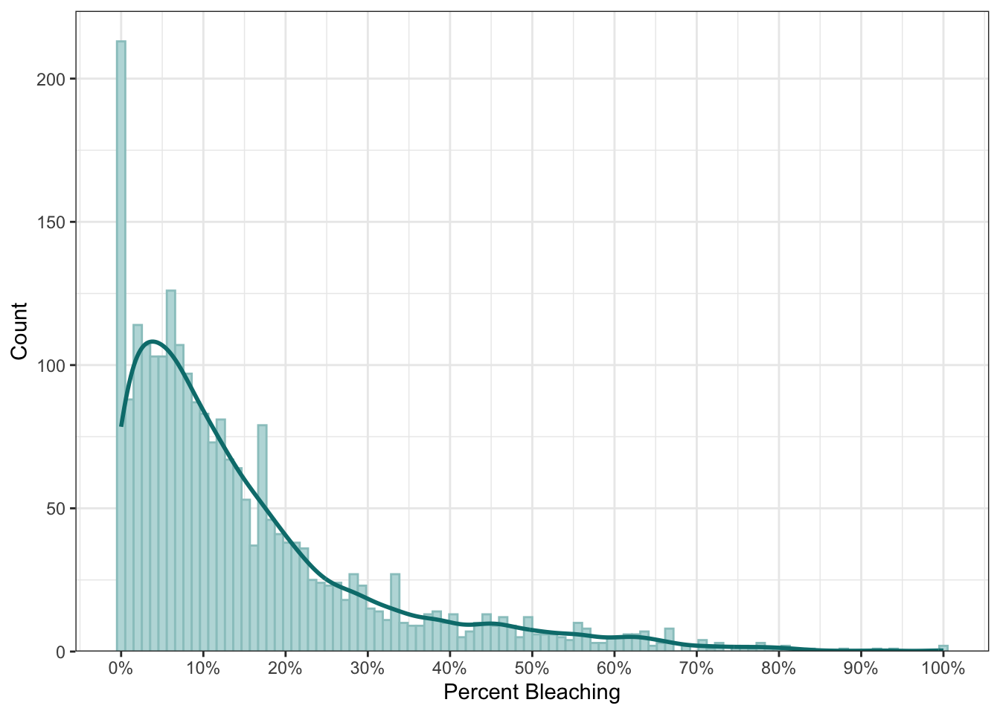
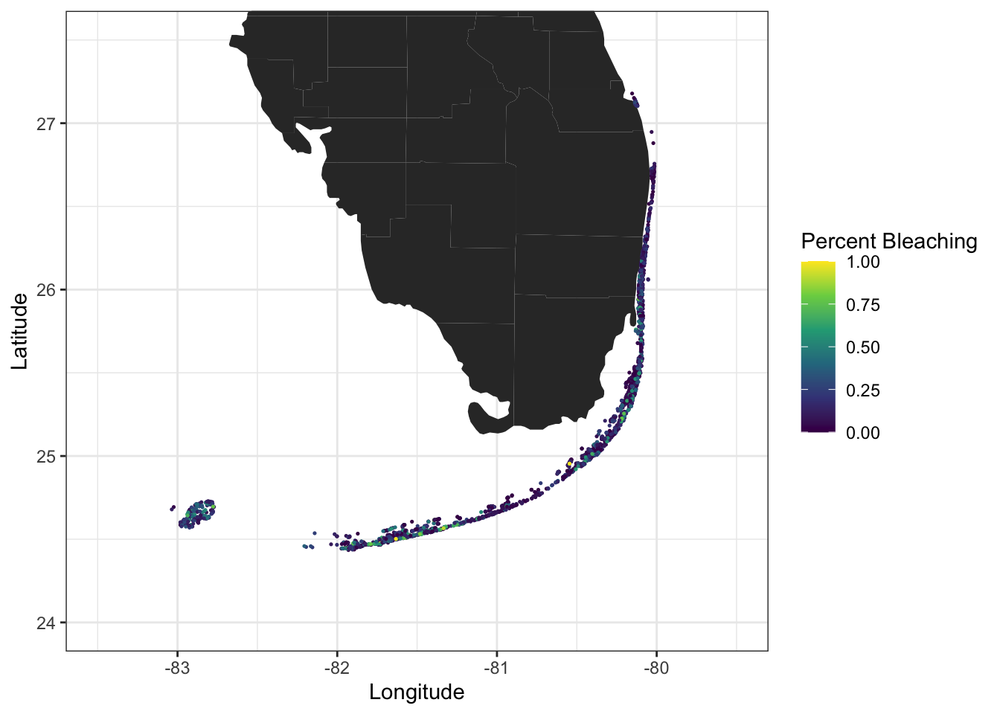
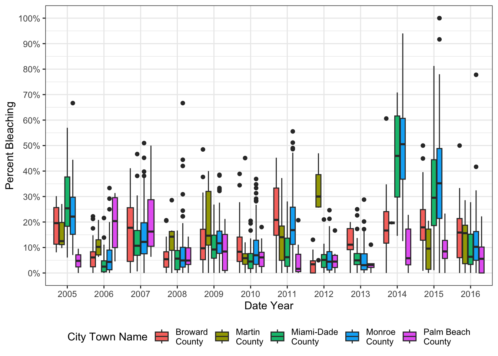
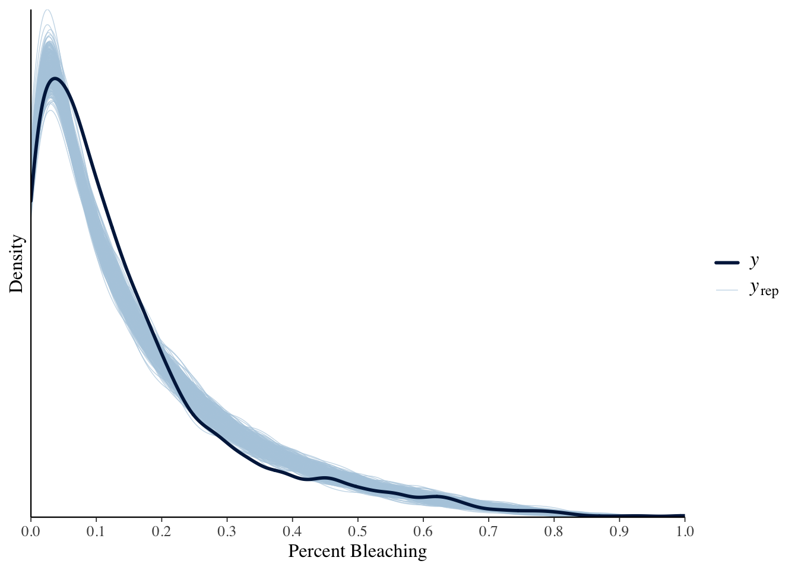
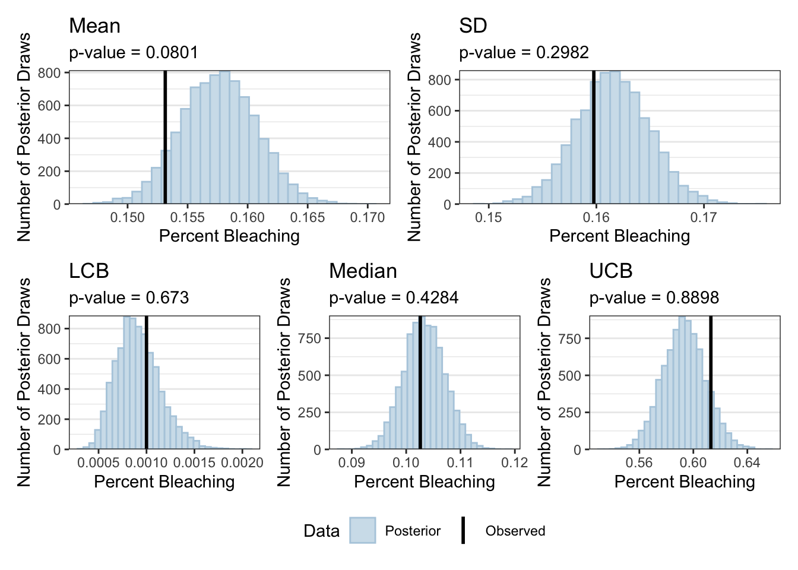
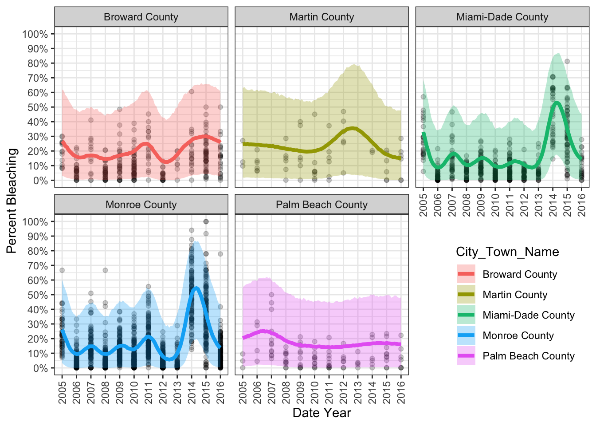
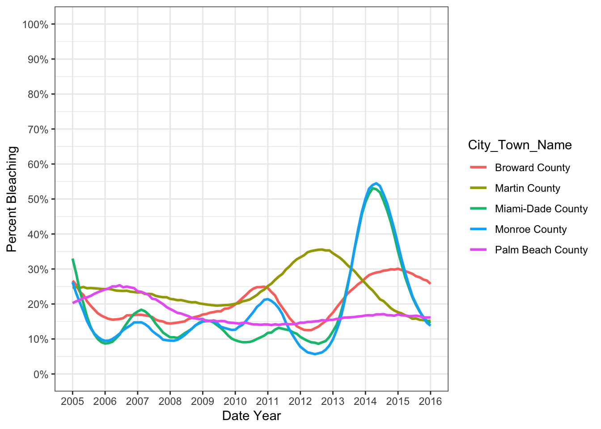
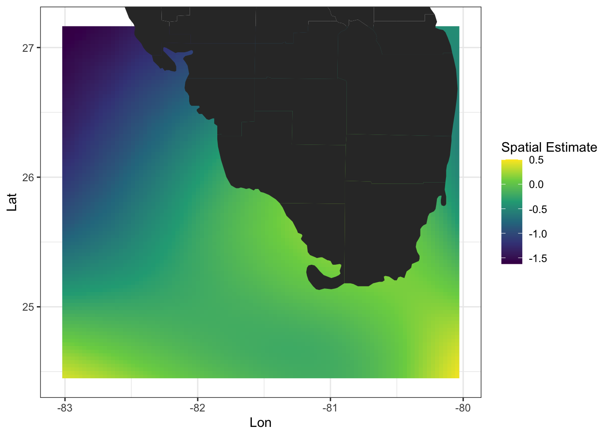

| Covariate | Description | Units |
|---|---|---|
This study examines coral bleaching patterns across Florida’s reefs using a Bayesian modeling approach. By analyzing environmental factors like ocean temperature, storms, and water quality, it explores trends in bleaching severity over time.
📌 Key highlights:
- Investigates how environmental conditions influence bleaching risk
- Captures spatial and temporal patterns in bleaching events
- Identifies key predictors of severe bleaching years
Motivation
Coral bleaching occurs when corals experience stress due to changes in environmental conditions such as temperature, light, or nutrient levels. This stress leads corals to expel their symbiotic algae, resulting in the loss of their coloration and, in severe cases, coral death.
Several factors contribute to coral bleaching, including rising sea temperatures, sea-level changes, and ocean acidification, all of which are consequences of climate change. Understanding the key environmental drivers of bleaching is critical for conservation efforts.
The objective of this study is to identify and quantify the impact of key environmental covariates on coral bleaching while also assessing how bleaching has changed over time across different locations in Florida. Using spatiotemporal modeling, we analyze trends in coral bleaching by incorporating both spatial variation (reef locations) and temporal patterns (yearly changes) within a Bayesian regression framework.
Data
This study utilizes a dataset with 2,394 observations collected between 2005 and 2016 sourced from the Florida Reef Resilience Program. The data includes various environmental and spatial covariates hypothesized to influence coral bleaching. The response variable, Percent Bleaching, measures the proportion of coral affected in each transect. Below is a list of key environmental and geographic covariates that may contribute to bleaching events:
Percent Bleaching Distribution
The Percent Bleaching data exhibits a right-skewed distribution (Figure 1), with a substantial number of observations reporting 0% bleaching.

Spatial Structure
Coral bleaching observations were geographically distributed across Florida’s reef systems (Figure 2). Mapping Percent Bleaching reveals spatial clustering, with certain areas experiencing more severe bleaching than others.

Temporal Structure
The dataset spans 2005 to 2016, providing an opportunity to analyze bleaching trends over time (Figure 3). Boxplots of Percent Bleaching over the years, categorized by City_Town_Name, reveal distinct temporal patterns across locations.

Model Description
Model Specification
To model the proportion of coral bleaching \(Y_i\) for \(i = 1, ..., 2394\), we use a Bayesian Beta regression with a logit link function:
\[ Y_i \sim \text{Beta}(\mu_i \phi, (1-\mu_i) \phi) \]
where \(\mu_i\) is the mean bleaching percentage, and \(\phi\) is the precision parameter. Various models for the mean structure were examined and defined as:
\[ \begin{aligned} \textbf{Model 1}: \text{logit}(\mu_i) &= \text{Date\_Year}_i\beta_1 + \text{Lat}_i\beta_2 + \text{Lon}_i\beta_3 + \sum_{p} X_{ip}\beta_p \\ \textbf{Model 2}: \text{logit}(\mu_i) &= \text{Date\_Year}_i\beta_1 + g(\text{Lat}, \text{Lon}) + \sum_{p} X_{ip}\beta_p \\ \textbf{Model 3}: \text{logit}(\mu_i) &= f(\text{Date\_Year}) + \text{Lat}_i\beta_2 + \text{Lon}_i\beta_3 + \sum_{p} X_{ip}\beta_p \\ \textbf{Model 4}: \text{logit}(\mu_i) &= f(\text{Date\_Year}) + g(\text{Lat}, \text{Lon}) + \sum_{p} X_{ip}\beta_p \\ \textbf{Model 5}: \text{logit}(\mu_i) &= f_{\text{City\_Town\_Name}}(\text{Date\_Year}) + \text{Lat}_i\beta_2 + \text{Lon}_i\beta_3 + \sum_{p} X_{ip}\beta_p \\ \textbf{Model 6}: \text{logit}(\mu_i) &= f_{\text{City\_Town\_Name}}(\text{Date\_Year}) + g(\text{Lat}, \text{Lon}) + \sum_{p} X_{ip}\beta_p \\ \end{aligned} \]
where:
Gaussian Process (GP) for Temporal Trends
\[ f_{\text{City\_Town\_Name}}(\text{Date\_Year}) \sim \mathcal{GP} (0, (k_c(t_i, t_j))_{i,j = 1}^n) \]
where the covariance function for each city \(c\) is:
\[ k_c(t_i, t_j) = \sigma_c^2 \exp\left( -\frac{||t_i - t_j||^2}{2 \rho_c^2} \right) \]
with:
- \(t_i, t_j\) as observed
Date_Yearvalues. - \(c\) representing the city (
City_Town_Name), where each city has a separate GP. - \(k_c(t_i, t_j)\) as the covariance function, using an exponentiated-quadratic (squared exponential) kernel.
- \(\sigma_c^2\) representing a standard deviation parameter of the GP for city \(c\).
- \(\rho_c\) as the characteristic length-scale parameter.
Tensor-Product Spline for Spatial Variation
\[ g(\text{Lat}, \text{Lon}) = \sum_{k_1} \sum_{k_2} \beta_{k_1 k_2} B_{k_1}(\text{Lat}) B_{k_2}(\text{Lon}) \]
where:
- \(B_{k_1}(\text{Lat})\) and \(B_{k_2}(\text{Lon})\) are basis functions for latitude and longitude.
- \(\beta_{k_1 k_2}\) are the coefficients to be estimated.
- The smoothing penalty is controlled by a hyperparameter \(\lambda\), which regularizes the estimated coefficients.
Fixed Effects
\[ \sum_{p} X_{ip} \beta_p \]
where:
- \(X_{ip}\) is the value of the \(p\)-th covariate for observation \(i\).
- \(\beta_p\) is the corresponding regression coefficient.
Prior Specification
- Fixed Effects:
- \(\beta_p \sim \mathcal{N}(0,5)\) for all covariates \(p\).
- Gaussian Process (Temporal Trends):
- \(\sigma_c \sim \text{half-Cauchy}(0,2)\)
- \(\rho_c \sim \text{InvGamma}(4.308447, 0.957567)\) (explicitly defined by
brms)
- Tensor-Product Spline:
- \(\beta_{k_1 k_2} \sim \mathcal{N}(0,5)\)
- \(\lambda \sim \text{half-Cauchy}(0,2)\) (if explicitly included in smoothing penalty)
- Precision Parameter:
- \(\phi \sim \text{Gamma}(0.1, 0.1)\)
This model accounts for both spatial and temporal dependencies, allowing for flexible trend estimation.
Data Preprocessing
Before fitting the model, we applied several preprocessing steps:
- Response Variable Transformation: Since the Beta regression model requires values strictly in the (0,1) range, we replaced:
- 0% bleaching values with 0.001
- 100% bleaching values with 0.999
- Covariate Transformations:
- Yeo-Johnson transformation was applied to all continuous covariates to reduce skewness.
- Centering and scaling were performed to standardize covariates for better model convergence.
Model Comparison
We tested the 6 models abive to evaluate different approaches for capturing spatiotemporal variation in coral bleaching. The candidate models included:
- Linear models with Date_Year as a fixed effect.
- GP models, both with and without city-specific trends.
- Smoothed Spline models, incorporating either Lat and Lon as fixed effects or a smooth spatial term.
After running convergence checks, the final model was selected using Leave-One-Out Cross-Validation (LOO-CV), ensuring it provided the best balance between fit and complexity.
| Model | Temporal Structure | Spatial Structure | elpd_diff_loo1 | se_diff_loo2 | p_loo3 | looic4 | se_looic5 |
|---|---|---|---|---|---|---|---|
| 1 Difference in Expected Log pointwise Predictive Density for a new dataset | |||||||
| 2 Standard Error of component-wise elpd_diff_loo between two models | |||||||
| 3 Effective number of parameters | |||||||
| 4 Leave-one-out Information Criteria | |||||||
| 5 Standard Error of looic | |||||||
Selected Model
Model 6 emerged as the best-performing model in the comparison based on Leave-One-Out Information Criterion (LOOIC) and expected log predictive density (ELPD). It achieved the lowest LOOIC and the highest ELPD, indicating superior predictive accuracy while effectively balancing model complexity.
A key advantage of Model 6 was its flexible structure, incorporating:
- City-Specific GPs for temporal variation, capturing localized trends in bleaching over time.
- A Tensor-Product Smoothed Spline for spatial variation, allowing for smooth, nonlinear geographic effects.
- A broad set of environmental and physical predictors, including Distance to Shore, Exposure, Turbidity, Cyclone Frequency, Depth, Windspeed, ClimSST, SSTA, TSA, and TSA_DHW, hypothesized to drive bleaching dynamics.
Compared to alternative models, Model 6 provided the best trade-off between fit and generalizability, avoiding overfitting while preserving essential temporal and spatial dependencies. However, some covariates exhibited credible intervals overlapping zero, suggesting they might not contribute meaningfully. To enhance interpretability and model efficiency, we performed an iterative variable selection process, systematically removing weak predictors and reassessing model performance.
Model Refinement and Variable Selection
To improve model parsimony and predictive performance, an iterative refinement process was conducted to remove covariates that did not contribute significantly to the model. The refinement process followed these steps:
Identify Non-Significant Covariates
- Variables whose 95% credible intervals contained zero were considered weak contributors.
Iterative Variable Removal & Refitting
- The least significant covariate was removed from the model.
- The model was then refit without that covariate to assess its impact.
Evaluate Model Fit via Bayes Factor & MAE
- Bayes Factor (BF) Comparison: The refined model was compared to the previous iteration using
bayes_factor(). If BF > 10, the new model was preferred. - LOOIC: The reliability of how the refined model generalizes to new data was estimated. If LOOIC was lower, the new model was retained.
- Mean Absolute Error (MAE): The predictive performance was evaluated using the PPD from refined model compared to observed Percent Bleaching to check model improvement/degradation. If MAE improved or remained stable, the new model was retained.
- Bayes Factor (BF) Comparison: The refined model was compared to the previous iteration using
Repeat Until No Further Improvement
- This process continued until all remaining covariates contributed meaningfully, ensuring the final model was both interpretable and robust.
Through this process, unnecessary covariates were systematically removed, leading to a final optimized model that retained only the most relevant predictors while maintaining strong predictive accuracy.
| Prior Model | Refined Model | Covariate Removed | BF | LOOIC | MAE |
|---|---|---|---|---|---|
Final Model
Through iterative model comparison, Model 9 was selected as the best-performing model, showing improvements over Model 6 in terms of fit and interpretability. This selection process involved removing non-significant covariates one at a time while assessing model performance metrics. Importantly, the smoothing parameters remained unchanged throughout this refinement process, ensuring consistency in spatial and temporal trends. The final model captures essential environmental and climatic predictors, balancing complexity and generalizability.
Model 9 includes key predictors such as Distance to Shore, Turbidity, Cyclone Frequency, Windspeed, Sea Surface Temperature Anomalies (SSTA), Thermal Stress Anomaly (TSA), and Degree Heating Weeks derived from TSA (TSA_DHW). These covariates were retained based on their statistical significance and their ecological relevance to coral bleaching dynamics. The refined model structure provides a robust framework for understanding and predicting bleaching patterns, facilitating targeted conservation efforts.
Goodness of Fit
A key aspect of evaluating the selected model’s reliability is examining its ability to replicate observed data patterns. Posterior predictive checks provide a direct way to assess the extent to which simulations from the model align with the actual observed data.
Posterior Predictive Checks
To evaluate the model’s fit, we conducted posterior predictive checks (PPCs), which compare the observed data to simulated draws from the posterior predictive distribution. The following visualizations assess whether the model-generated data resemble the observed coral bleaching percentages.
Distribution Overlay
Figure 4 presents an overlay of the posterior predictive distribution (PPD) against the observed bleaching percentages. The solid black line represents the observed data (\(y\)), while the blue-shaded posterior simulations (\(y_{rep}\)) provide an indication of model uncertainty. The strong alignment between the observed and predicted densities suggests that the model successfully captures the overall distribution of coral bleaching percentages.

Distributional Statistics
The set of plots in Figure 5 evaluates how well the model reproduces key summary statistics of the observed data, including:
- Mean
- Standard deviation (SD)
- 2.5% Lower credible bound (LCB)
- Median
- 97.5% Upper credible bound (UCB)
Each histogram represents the distribution of these statistics across 8000 posterior simulations, with the vertical black line indicating the observed statistic. The Bayesian p-values assess whether the observed value is typical less than the posterior predictive distribution values. Values close to 0.5 suggest a good fit, while values near 0 or 1 may indicate potential discrepancies.
Overall, these diagnostics confirm that the final model provides a reasonable approximation of the observed data, supporting its validity for inference and prediction.

Model Results
After validating the model’s performance through posterior predictive checks, we now examine the key results. This section explores the significance of model predictors, the temporal trends in bleaching events, and the spatial distribution of bleaching risk across Florida’s coral reefs.
Variable Importance
The table below presents the estimated fixed effects from the final Bayesian Beta regression model. Each coefficient represents the effect of a predictor on the proportion of coral bleaching. The interpretation of key predictors is as follows:
| Parameter | β1 | SD(β)2 | 95% CI3 |
|---|---|---|---|
| 1 Parameter estimate | |||
| 2 Standard Deviation of parameter estimate | |||
| 3 95% Credible Interval of parameter estimate | |||
Key Observations:
Distance to Shore (β = 0.1005, 95% CI: [0.0338, 0.1660]) – Positively associated with bleaching, indicating that reefs farther from shore experience slightly higher bleaching, potentially due to differences in water quality and exposure to open ocean stressors.
Turbidity (β = -0.0784, 95% CI: [-0.1270, -0.0295]) – Negatively associated with bleaching, suggesting that murkier waters may provide some shielding from temperature-induced stress.
Cyclone Frequency & Wind Speed (β = -0.0524, -0.0466) – Moderate negative effects, likely due to increased mixing of ocean layers, reducing localized heat stress on corals.
SSTA (β = -0.0573, 95% CI: [-0.1104, -0.0047]) – Contrary to expectations, this predictor has a small negative effect, possibly reflecting interactions with other environmental conditions or non-linear temperature effects.
TSA & TSA_DHW (β = 0.1313, 0.0885) – Significant positive effects, confirming that prolonged heat stress increases bleaching probability.
Temporal Effects
To evaluate how bleaching trends evolve over time, we analyze posterior estimates of the temporal effect from the GP component.
County-Specific Trends
The plot below illustrates the estimated temporal variation in bleaching probability across five Florida counties from 2005 to 2016:

Key Findings:
Each county shows unique bleaching patterns, with different peak years.
Monroe and Miami-Dade counties have higher bleaching probabilities and greater interannual variability than the others.
Palm Beach County maintains relatively low bleaching levels compared to other regions.
This faceted plot illustrates the modeled county-specific temporal variation in bleaching probability, capturing how bleaching risk fluctuates over time in different locations.
Overlaid Trends
To provide a broader comparison of modeled bleaching trends across counties, the following plot presents an overlay of the estimated temporal effects without faceting:

Key Observations:
The overlay allows for direct comparison between counties, highlighting relative differences in bleaching probabilities.
Monroe and Miami-Dade Counties stand out with the most extreme bleaching peak in 2014-2015.
The relatively synchronized bleaching peaks across counties suggest that widespread regional environmental drivers, such as temperature anomalies, are at play.
While this plot removes individual county facets, it retains the key modeled trends and provides a clearer comparative perspective on bleaching severity across regions.
Spatial Effects
The spatial effects plot provides insights into regional differences in bleaching susceptibility. The spatial random effect was modeled using a tensor-product spline, capturing localized variations beyond the fixed effects.

Key Findings:
Higher bleaching probabilities are concentrated in nearshore reefs along the Florida Keys and southeastern coastline, reinforcing the importance of local environmental stressors.
Some offshore reef systems exhibit lower bleaching risk, potentially due to deeper waters or localized upwelling that buffers temperature stress.
The spatial gradient suggests that conservation efforts should prioritize areas with high predicted bleaching risk, particularly in the southeastern coastal zone.
Discussion
This study applied a spatiotemporal modeling approach to assess coral bleaching trends across Florida’s reef systems, capturing both geographic variation and temporal changes. The results demonstrate that prolonged TSA and TSA_DHW as well as Distance to Shore are the strongest predictors of bleaching, with additional associations observed for SSTA, turbidity, cyclone frequency, and wind speed. While thermal stress is well-documented as a primary driver of bleaching, this analysis suggests that local environmental conditions, such as water quality and storm activity, may influence bleaching severity in complex ways.
By incorporating both spatial and temporal variation, the model identifies region-specific and time-dependent patterns of bleaching risk, reinforcing the importance of localized conservation strategies. These findings emphasize the need for continued monitoring and adaptive management that considers both large-scale climate stressors and site-specific environmental factors.
Limitations
While this study provides valuable insights, several limitations should be considered:
Data Constraints: The dataset spans from 2005 to 2016, preventing assessment of more recent bleaching trends.
Model Assumptions: The Bayesian Beta regression model imposes distributional constraints that may not fully capture extreme bleaching events.
Unmeasured Factors: Variables such as nutrient levels, local anthropogenic impacts, and additional reef health indicators were not included but may play a role in bleaching dynamics.
Future Directions
While this study leveraged the most recent available FRRP data (2005–2016), future research could benefit from new data collection to assess whether the observed trends persist under current climate conditions. Additionally, further exploration of existing datasets could provide deeper insights into bleaching patterns by incorporating complementary environmental variables or alternative modeling approaches.
Potential areas for methodological refinement include:
Investigating Local Influences: Further analysis could assess whether turbidity consistently mitigates bleaching severity and how storm-induced ocean mixing interacts with thermal stress.
Enhancing Modeling Approaches: Exploring alternative statistical frameworks, such as hierarchical or machine learning-based models, may improve predictive accuracy and better capture nonlinear relationships.
Integrating Additional Environmental Variables: If future datasets allow, incorporating nutrient levels, pollution metrics, or additional reef health indicators could refine understanding of bleaching dynamics.
By focusing on these methodological improvements, future research can build upon this study’s findings to further improve bleaching risk assessments and conservation planning.